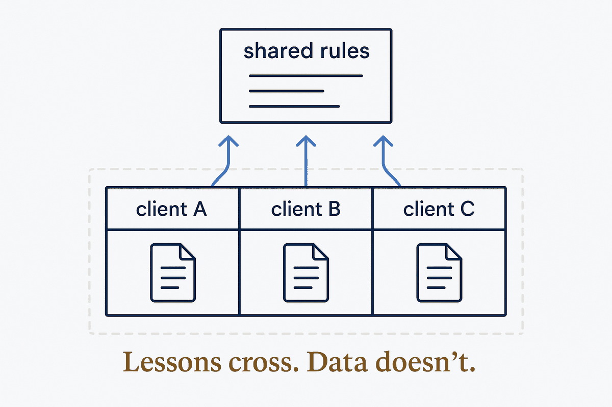

A boundary between contexts that must not mix — clients, people, roles — built into the structure. Only approved, generalised knowledge crosses; the data itself never does. The bank's Chinese wall, made structural.

Banks and law firms have long separated departments that must not share what they know — the advisers who know about a takeover in advance, and the traders who could profit from it. The old name was the Chinese wall; the profession now says information barrier or ethical wall. When someone really must cross, there is a formal wall-crossing: approved, recorded, restricted.
The same barrier is needed wherever one system serves several parties: an accountant with many clients, a shared assistant for two travellers, a central knowledge base that learns from many customers. Client A's data must never show up in client B's answer. What may cross is generalised knowledge — a rule, a checklist item, a lesson stripped of the person it came from. The data itself stays on its own side.
Where the airlock stands between your data and the model, the information barrier stands between the contexts inside your system. A system that learns from everyone needs both: an airlock per customer, and a barrier between customers with exactly one controlled crossing — the shared rules library.
The lesson from the banks is in their fines: a barrier that exists only as policy and training leaks, because people cross it (see The Policy Wall). Build it into the structure — separate vaults, separate keys, visibility and share fields in the files, a publication step that only lets marked content through — so that crossing takes a deliberate, logged act, the structural version of wall-crossing.